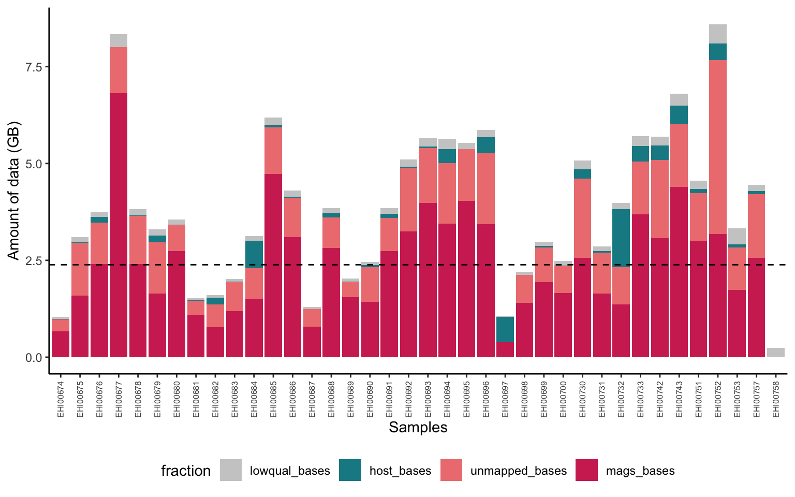
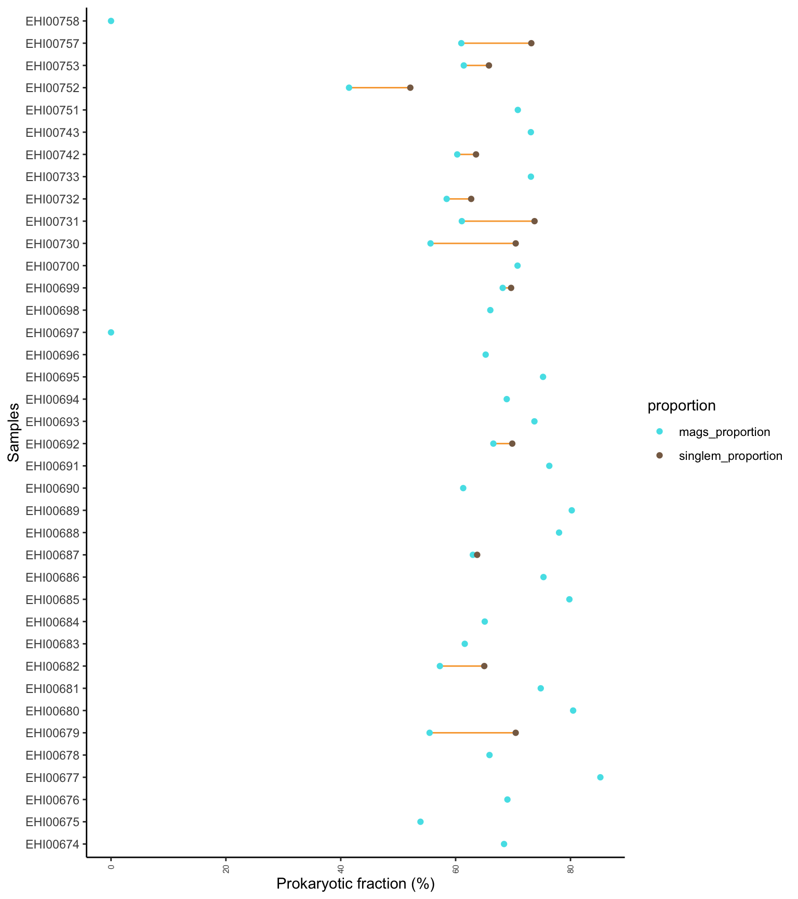
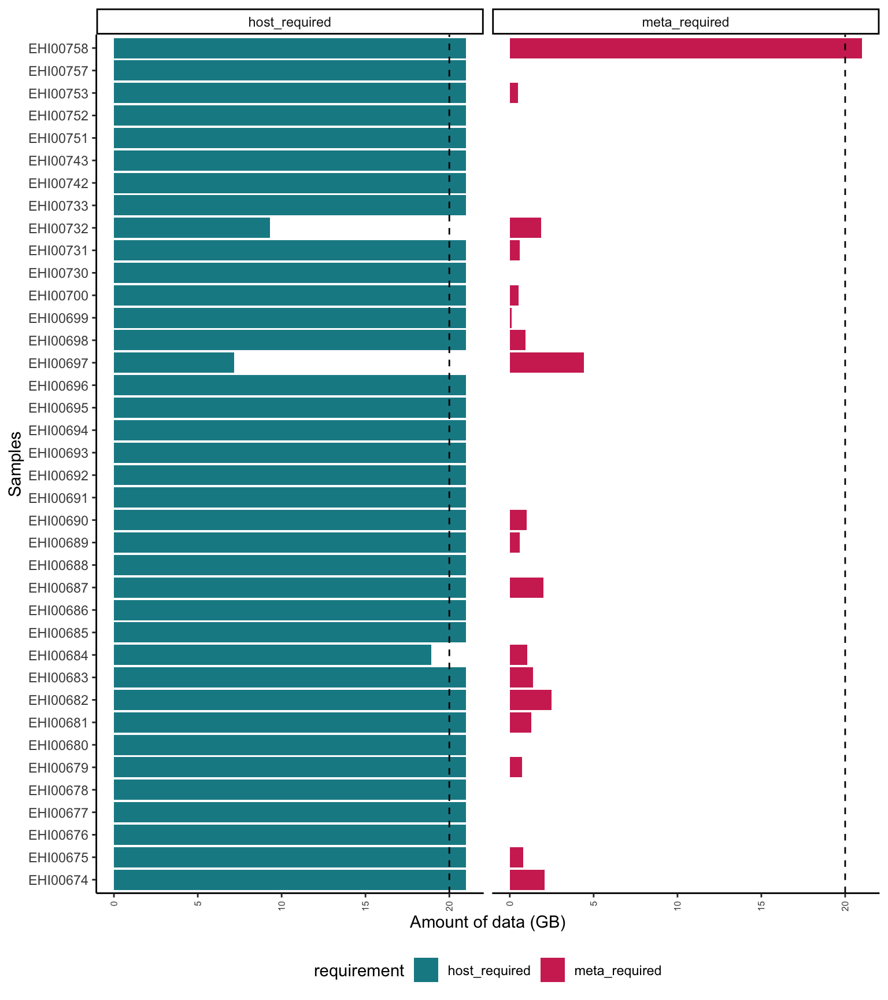

Chapter 4 Sequencing Assessment
This workflow explores the characteristics of the MAG catalogue generated through the EHI pipeline. Note the workflow begins where the General analysis pipeline ends, so make sure you go through the general pipeline before starting working on this document.
4.1 DNA fractions
When performing genome-resolved metagenomic analyses on host-associated microbial communities, the data usually contains a mixture of origins. One fraction is low-quality data that is discarded in the bioinformatic preprocessing due to lack of informativeness. These data include low-quality bases, adaptors, low-complexity reads and alike, which do not contribute to the study. Another fraction belongs to the host genome against which the data are mapped. The host fraction can be very variable depending on the species and the sample type, and while it is not informative for metagenomic analyses, it can be used for genomic analyses. The rest is what we call the metagenomic fraction. Part of the metagenomic fraction is built into draft bacterial genomes or MAGs, against which metagenomic reads are mapped later on to quantify relative representation of genomes. The fraction that is not built into MAGs is what is also unmapped against the MAG catalogue. This last fraction includes DNA dietary items, viruses and other organisms, but can include prokaryotic DNA of bacteria and archaea that were unable to be reconstructed. In order to have representative results, the number of reads mapped to the MAG catalogue should be similar across samples. However, multiple reasons can create large imbalances, including uneven sequencing depth, different microbiome complexity across samples, different amount of host or non-microbial reads in the dataset, etc.
The following scripts generate a plot showing the distribution of reads across samples.
sequence_fractions <- count_table %>%
rownames_to_column("Genome") %>%
pivot_longer(-Genome, names_to = "sample", values_to = "value") %>%
group_by(sample) %>%
summarise(mags = sum(value)) %>%
left_join(sample_table, by = join_by(sample == sample)) %>%
select(sample,mags,metagenomic_bases,host_bases,bases_lost_fastp_percent) %>%
mutate(mags_bases = mags*146) %>%
mutate(lowqual_bases = ((metagenomic_bases+host_bases)/(1-bases_lost_fastp_percent))-(metagenomic_bases+host_bases)) %>%
mutate(unmapped_bases = metagenomic_bases - mags_bases) %>%
mutate(unmapped_bases = ifelse(unmapped_bases < 0, 0, unmapped_bases)) %>%
select(sample,mags_bases,unmapped_bases,host_bases,lowqual_bases)
mags_bases_mean <- sequence_fractions %>%
mutate(mags_bases = mags_bases / 1000000000) %>%
select(mags_bases) %>%
pull() %>%
mean() sequence_fractions %>%
pivot_longer(!sample, names_to = "fraction", values_to = "value") %>%
mutate(value = value / 1000000000) %>%
mutate(fraction = factor(fraction, levels = c("lowqual_bases","host_bases","unmapped_bases","mags_bases"))) %>%
ggplot(., aes(x = sample, y = value, fill=fraction)) +
geom_bar(position="stack", stat = "identity") +
scale_fill_manual(values=c("#CCCCCC","#178a94","#ee8080","#d03161")) +
geom_hline(yintercept = mags_bases_mean, linetype = "dashed", color = "black") +
labs(x = "Samples", y = "Amount of data (GB)") +
theme_classic() +
theme(axis.text.x = element_text(angle = 90, vjust = 0.5, hjust = 1, size=6),legend.position = "bottom")
4.2 Estimated vs. mapped prokaryotic fraction
The main metric employed to assess the representativeness of a prokaryotic community using genome-resolved metagenomics is to measure the percentage or reads mapped to the MAG catalogue. This metric, however can be slippery when prokaryotic DNA is not dominant in the metagenomic mixture. Host DNA, dietary DNA, viral DNA and other non-prokaryotic DNA sequences can drastically underestimate representativeness in such cases. In the EHI we also employ another metric which estimated the proportion of prokaryotic sequences in a sample relying on coverage values on marker genes and extrapolation of genome sizes of the closest relatives. Combining both approaches, we can better estimate whether a prokaryotic community has been properly represented, or whether further sequencing is required.
The following script generate a plot in which the difference between estimated vs. mapped prokaryotic fractions can be visualised. A longer the orange line indicates that the mapping rate is further away from the expected fraction of prokaryotic DNA. The absence of lines and brown dots indicate that the mapping rate and the estimated fraction match, so the representativeness is correct. When the mapping value is at zero, it indicates that not enough metagenomic data was generated for this type of analyses, usually due to excessive host DNA.
singlem_table <- sequence_fractions %>%
mutate(mags_proportion = round((mags_bases / (mags_bases + unmapped_bases))*100,2)) %>%
left_join(sample_table, by = join_by(sample == sample)) %>%
mutate(singlem_proportion = round(singlem_fraction*100,2)) %>%
select(sample,mags_proportion,singlem_proportion) %>%
mutate(mags_proportion = ifelse(singlem_proportion == 0, 0, mags_proportion)) %>% #convert zeros to NA
mutate(singlem_proportion = ifelse(singlem_proportion == 0, NA, singlem_proportion)) %>% #convert zeros to NA
mutate(singlem_proportion = ifelse(singlem_proportion < mags_proportion, NA, singlem_proportion)) %>% #if singlem is smaller, then NA, to simplify plot
mutate(singlem_proportion = ifelse(singlem_proportion > 100, 100, singlem_proportion)) #simplifysinglem_table %>%
pivot_longer(!sample, names_to = "proportion", values_to = "value") %>%
mutate(proportion = factor(proportion, levels = c("mags_proportion","singlem_proportion"))) %>%
ggplot(., aes(x = value, y = sample, color=proportion)) +
geom_line(aes(group = sample), color = "#f8a538") +
geom_point() +
scale_color_manual(values=c("#52e1e8","#876b53")) +
theme_classic() +
labs(y = "Samples", x = "Prokaryotic fraction (%)") +
theme(axis.text.x = element_text(angle = 90, vjust = 0.5, hjust = 1, size=6),legend.position = "right")
4.3 Additional sequencing needed
Estimating the amount of host and metagenomic data required for robust hologenomic analyses is very complex, because these values are dependent on many system and study-specific factors. Here you will find the minimum data requirements that work for most systems, which take as reference a desired amount of 5GB of host DNA and 2GB of prokaryotic DNA. The calculations of extra sequencing required take into account the different fractions of sequencing data, including low-quality, host, MAG catalogue-mapped and other metagenomic reads. The bars exceeding the vertical dashed bar set at 20GB of data indicate that more than 20GBs are required to reach the desired amount of host or prokaryotic data. You can check the table for the actual value, but bear in mind that generating more than 20GB of data is economically prohibitive in most cases.
# Define the aimed GBs for host and mapped metagenomic data
mags_bases_aim=2
host_bases_aim=5
sequence_fractions_required <- sequence_fractions %>%
mutate(mags_bases = round(mags_bases / 1000000000,2)) %>%
mutate(unmapped_bases = round(unmapped_bases / 1000000000,2)) %>%
mutate(host_bases = round(host_bases / 1000000000,2)) %>%
mutate(lowqual_bases = round(lowqual_bases / 1000000000,2)) %>%
mutate(total_bases = mags_bases+unmapped_bases+host_bases+lowqual_bases) %>%
mutate(mags_bases_fraction = mags_bases/total_bases) %>%
mutate(mags_bases_difference = mags_bases_aim - mags_bases) %>%
mutate(meta_required = round(mags_bases_difference / mags_bases_fraction,2)) %>%
mutate(meta_required = ifelse(meta_required < 0, 0, meta_required)) %>%
mutate(host_bases_fraction = host_bases/total_bases) %>%
mutate(host_bases_difference = host_bases_aim - host_bases) %>%
mutate(host_required = round(host_bases_difference / host_bases_fraction,2)) %>%
mutate(host_required = ifelse(host_required < 0, 0, host_required)) %>%
select(sample,mags_bases,unmapped_bases,host_bases,lowqual_bases,meta_required,host_required)sequence_fractions_required %>%
select(sample,meta_required,host_required) %>%
mutate(meta_required = ifelse(meta_required > 20, 21, meta_required)) %>%
mutate(host_required = ifelse(host_required > 20, 21, host_required)) %>%
pivot_longer(!sample, names_to = "requirement", values_to = "value") %>%
mutate(requirement = factor(requirement, levels = c("host_required","meta_required"))) %>%
ggplot(., aes(x = value, y = sample, fill=requirement, group=requirement)) +
geom_bar(position="stack", stat = "identity") +
scale_fill_manual(values=c("#178a94","#d03161")) +
facet_wrap(~requirement, scales="free_x") +
labs(x = "Amount of data (GB)", y = "Samples") +
geom_vline(xintercept = 20, linetype = "dashed", color = "black") +
theme_classic() +
theme(axis.text.x = element_text(angle = 90, vjust = 0.5, hjust = 1, size=6),legend.position = "bottom")